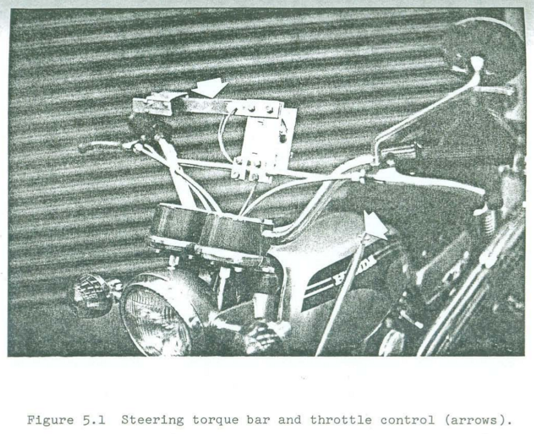

Davis Instrumented Bicycle¶
Warning
This document is a draft which is updated regularly (Last updated May 27, 2012 at 13:00:06 PDT). Once I submit if for my doctoral degree at UC Davis, it will be done. So for now use at your own risk. The information may or may not be correct. Reviews, comments and suggestions are welcome.
Preface¶
At the beginning of 2009 I was in Delft working with Jodi and Arend on much of the work explained in the previous chapters. I was still also in contact with Mont and Luke back in Davis. Before I’d come to Delft, Luke had mentioned the possibilities of applying for an NSF grant to fund the remainder of our bicycle dynamics projects. This was enticing, as Mont has not had much grant funding over the years for his lab, preferring to work spend more time researching less expensive endeavours than grant writing. We really needed some dedicated research time, as we spent the first few years taking teaching assistance positions which ate up most of our available research time outside of our classes. I fortunately got a Fulbright grant for the 2008 school year which gave me a year’s stipend so that I could focus on research and on top of that Jodi’s PhD budget helped fund the practical research costs in Delft and some of my conference trips. At the beginning of December 2008 Luke sent me an email with a renewed interest in applying for the NSF grant and Mont seemed to be on board. Mont also talked with Ron and got him interested. We spent the next two months writing our grant proposal using video conferencing and collaborative word processing to get it done. The basic idea was to pair Ron’s manual control expertise with our bicycle dynamics expertise to study the dynamics, control and handling qualities of bicycles with the theoretical constructs supported by extensive experimentation. Our work paid off and we received the grant, albeit at a smaller amount than asked for so we had to cut back some of the scope (which Arend had correctly forecast of being too large!). This set us up for a two year study where we’d develop a manual control model, verify it and the basic bicycle dynamics with both an instrumented bicycle and a robotic bicycle, and wrap it up with some work on handling qualities predictions.
When I got back to Davis in September 2009 we started gearing up for the grant work that would start October 1st. I had to get my qualifying exam done in October and I also signed up for a Spanish class (which wasn’t necessarily a good idea for the grant’s sake). Luke also took some programming classes and this gave us a really slow start, as neither Luke or I realized that the scope of what we had to do didn’t really allow any more time for classes. We got moving though and started to plan out the bicycle(s) we were going to build.
Our proposal called for two bicycles, but somehow Luke and I hatched a plan to build a single multi-purpose bicycle to “save money”. Arend sent Danique over in January 2010 to do her internship with us. She was super bright and made great progress on the custom data acquisition system we’d envisioned. We’d decided to go fairly low level and use an Arduino paired with with a set of digital sensors. During this time, Luke and I had our roughest moments working together which was mostly rooted in my frustrations with the progress of this bicycle design. I’d already built a bicycle with Jodi that did almost everything I needed and I felt like I was reinventing the wheel and wasting time with all this low level data acquisition work. Things eventually broke down after the stress boiled to the top and we sat down with Mont to figure out how to solve things. The conclusion was to split the bicycle back into two and each of us move forward more independently. I think this was the absolutely right move for me in terms of getting the project done as I’d planned and the stress immediately went away. But the part I’m still bothered about was my inability to work in a direct team with Luke when the pressure to get things done was high. I know that if we work together, the final product would be many times greater than our independent work because of our complimentary skill sets, but conflicting visions of the final product and the path to get there really put a wall between us. I’m continually learning how to do teamwork and probably always will be. I doubt it is one of my strong points, as I always tend to want control. I hope that I can develop strong team environments for my students in the future too.
Nevertheless, the instrumented bicycle moved forward. I was awarded an extra grant to cover my stipend for the summer of 2010 and we used the NSF funds that would have covered me to hire Gilbert, a new student in our lab, to help us out for the summer. Between me, Gilbert and our undergraduate interns Mohammed, Stephen, Eric, and Chet we plowed through the bicycle construction through the summer pretty much putting the instrumented bicycle back on schedule for experimentation in the fall. But even with the summer push, it ended up taking me all fall quarter and some into the new year to get the bicycle in a working state and ready for the experimentation. This chapter details all that went into its design and operation of the Davis instrumented bicycle.
Introduction¶
This chapter details the design and implementation of an instrumented bicycle capable of accurately measuring the essential kinematics and kinetics associated with the human control of the bicycle.
I had originally considered using motion capture for the kinematics as we had very successful results measuring the complete kinematic configuration of the bicycle and rider with motion capture techniques as explained in Chapter Motion Capture, but I no longer had access to a system as good as the one at the Vrije Universiteit. The systems available here could capture the motion on the treadmill but were not especially not suited to capture the motion of the bicycle on the ground. With this in mind, we decided to expand upon the on board measurement techniques used in the Delft Instrumented bicycle as the basic design principal as this would allow the bicycle to collect data in a variety of environments. The most notable downside was inaccurate location tracking of the system. But we concluded that this wouldn’t be detrimental to system identification and moved forward with the instrumentation.
The bicycle’s primary design criteria were as follows:
- Sized for our intended riders: average adult males.
- Restrict the rider’s biomechanical movement to more closely meet the Whipple model rigid rider assumption. This in turn also requires the bicycle to be self propelled so that the rider does not have to move their legs.
- Accurately measure the rider’s applied steering torque.
- Accurately measure the fundamental kinematics of the bicycle: three dimensional rates and orientations of the bicycle rear frame, front frame and wheels.
- Accurately apply and measure a lateral disturbance force to the bicycle frame.
From early on, I intended to attempt some experiments with some constrained rider biomechanical motion, such as leaning, because the interplay of the various control inputs available to the rider are a common research topic with little experimental backing. This led to secondary design criteria but as the project progressed and they were never fully implemented, but I’ll discuss them for completeness. They are as follows:
- Restrict the rider’s body motion to a limited set and measure the additional kinematics: hip roll, torso relative to hip lean, torso relative to hip twist, and lateral knee motions.
- Measure the additional reaction forces between the rider and bicycle: forces and moments in the seatpost and forces at the foot pegs.
These criteria framed the subsequent design choices described herein.
Bicycle¶
We needed a bicycle that would allow for easy modification and various mounting points for sensors and data acquisition equipment. Our original requirements for a bicycle were as follows:
- Steel frame for easy modification and welding.
- Disc brake brackets for mounting the wheel speed encoders.
- 100mm front dropout spacing and 135mm rear dropout spacing.
- 1-1/8 threadless headset to allow for easy modification.
- Round tubes for head, down, top, and seat tube (i.e. nothing non standard)
- Ideally a horizontal top tube for equipment mounting purposes.
- Threaded rack mount for instrumentation mounting.
- Accept 700c high pressure tires.
- Size: 54-58cm for our intended riders.
- An electric hub motor for forward propulsion.
We ended up choosing a large size Surly 1x1 model, Figure figSurly. It is designed as a single speed off road bicycle for 26” wheels with fat tires, but can be setup with 700c higher pressure tires. The frame is constructed from butted 4130 CroMoly steel tubing. It has both front and rear cantilever brake mounts in addition to disc brake mounts. Otherwise it met all of our requirements. We purchased some standard components including 700c aluminum wheels with 23c Continental Gatorskin high pressure tires and basic handlebars and brakes.

figSurly
To allow the bicycle to be propelled forward without requiring the rider to pedal, we opted for a bicycle electric hub motor kit. Amped Bikes graciously donated both direct drive and geared kits which included the motors, controllers, throttle and 36 volt lead acid batteries. I used the direct drive version on the instrumented bicycle. The lead acid batteries were very heavy so we purchased a light, ~2.8 kg, 36 volt lithium ion battery as a substitute to help decrease the over bicycle weight. The kit comes with a motor controller with a rudimentary “cruise control”. We needed some form of cruise control to allow the rider to set the speed during the experiment and then focus their attention to lateral control as opposed to throttle control. The Amped Bike cruise control worked well for the experiments performed on the floor, but was more difficult to match the cruise control to the speed of the treadmill. Some sort of feedback control would alleviate the difficulties, but we made due. The exposed wires from the hub motor are also easily susceptible to damage. The bicycle fell over once, damaged the wires and shorted the hall effects sensors in the hub. I spent a couple of weeks repairing it [1]. Overall, the motor met our needs for constant speed propulsion and the single battery would last an entire day of experimentation.
Rider Harnesses¶
The bicycle was designed to accommodate a range of allowable rider motions. I designed it with three modes in mind. Firstly, the rider can simply have complete free rider biomechanical motion as they would when normally riding a bicycle. The second design was intended to restrict almost all of the rider’s ability to move with respect to the bicycle frame to better mimic the rigid rider assumptions in many bicycle models. And thirdly, a harness was designed to restrict the rider’s movement to a particular subset of hypothesized dominant motions.
Rigid Rider¶
Todo
city Stassen1973 for the rider brace
Rigid rider models are often employed in single track vehicle research but the rider has been rigidified very few times in experimental work. This potentially problematic as the rigid rider assumption is a large one. [Eaton1973c] rigidfied his motorcyclists’ torso and performed several perturbation tests with the rider’s hands off the handlebars! He found it difficult to identifying the linear modes of motion. [Doyle1987] comments on the utility of rigidifying the rider which was very inline with his techniques to simplify the system, but he left the rider free to move in his experiments. Jim Papadopolous has been a proponent of using recumbent bicycles in studies due to the natural rigidification of the rider. His thoughts and the difficulties we had in the studies from Chapters Delft Instrumented Bicycle and Motion Capture influenced my decision of restricting the rider’s motion.
I constructed a harness such that the rider was rigidified as much as possible with respect to the rear frame. A medical back brace was used to rigidify the spine and hip motion. I then attached the brace to the bicycle frame via a stout adjustable arm.
figRigidHarness
I fashioned some knee straps with strong magnets taken from computer hard drives which would engage with a ferrous attachment plate on the frame so that the rider’s legs would be rigid with respect to the rear frame. Chapters Delft Instrumented Bicycle and Motion Capture showed the rider tends to use lateral knee motions and we wanted to eliminate that as a confounding factor. The magnets were weak enough that the rider could remove his legs in an emergency.
figKneeConstraints
This left the rider’s arms and head free to move. The arm motion was required for controlling the bicycle, although one could imagine fixing the rider’s arms and only allowing control with motion of their hands. The head probably should have been rigidified with respect to the body cast, but we didn’t due to comfort reasons. Nonetheless, Jan had great plans for a halo like ring with nails sticking through to the rider’s scalp so that they couldn’t move their head without excruciating pain, we just never got around to making it.
Restricted¶
A second harness was partially developed to restrict the rider’s motion to that described in Flexible rider (hip rotation, back lean and twist). A back brace which left the hips free to move was used to keep the spine straight and a custom molded hip braced was developed to hold securely to the hip bone. The plane was to attach the hip brace to the bicycle seat via a revolute in the roll direction which would allow the hips to only roll about the seat. The back brace would then be attached to the hip brace via a joint which would allow torso lean with respect to the hips. The feet would be attached to the foot pegs via clip in pedals. Forces applied from the feet to the foot pegs would effectively allow the rider’s hips to roll with respect to the bicycle frame (in reality because the rider is more massive and more inert the bicycle frame would roll with respect to the inertial reference frame).
Todo
take a photo of the partially constructed brace
My hypothesis was that this restricted motion would be all that would be needed to effective control the bicycle with no hands and would provide the next effective means of control along with steer torque. This design was only partially finished, so the merits of it were never tested.
Orientations, Rates and Accelerations¶
The two most important states that describe the lateral dynamics of the bicycle are roll and steer (as defined in Chapter Bicycle Equations Of Motion). Ideally one would like to measure the angular orientation, angular rate and angular accelerations of both the rear frame and the front frame. Sensors that allow direct, independent and accurate measurements of each are ideal, to avoid having to estimate measurements through differentiation, integration or state estimators. The two bodies share many of the kinematic measurements due to them being connected by a revolute joint. Table Table of maximal measured values found in all experimental data taken in Chapter motioncapture. The ranges were determined from 75 percentiles, the accuracy as a percentage of the range and the bandwidth as 75th percentile of the power in the signal. gives general ranges of bicycle kinematic motions from my previously collected data.
| Measurement | Range | Accuracy | Bandwidth |
|---|---|---|---|
| Roll Angle | \(\pm 8\) deg | 0.2 deg | 45 hz |
| Roll Rate | \(\pm 30\) deg/s | 0.6 deg/s | 40 hz |
| Roll Acceleration | \(\pm 100 \frac{\textrm{deg}}{\textrm{s}}\) | \(2 \frac{\textrm{deg}}{\textrm{s}}\) | 25 hz |
| Steer Angle | \(\pm 65\) deg | 1 deg | 45 hz |
| Steer Rate | \(\pm 150\) deg | 1.5 deg/s | 35 hz |
| Steer Acceleration | \(\pm 600 \frac{\textrm{deg}}{\textrm{s}}\) | \(12 \frac{\textrm{deg}}{\textrm{s}}\) | 30 hz |
The yaw, roll, pitch and steer rates, are typically measured directly with rate gyros, which have been available for the later half of the 20th century. The direct measurement of angular accelerations has yet to mature [Ovaska1998], so numerical differentiation and filtering of the angular rates is often used. The angular accelerations can also be computed if the acceleration and location of multiple points are measured with accelerometers. Most all experimental work with bicycles and motorcycles provide good examples of employing these type of kinematic sensors.
Roll¶
On the other hand, the roll angle is typically the most difficult kinematic measurement due to the fact that both the bicycle translates with respect to the ground plane and that the ground plane may not be normal to gravity. Integration of the easier roll rate measurement is an option, but definite initial conditions and some way to account for the drift due to integration is required, and not necessarily trivial. Past researchers have measured the roll angle with a variety of methods from trailers and third wheels to lasers and rate gyros with complementary state estimators.
[Dohring1953] may have used a trailer to measure roll angle. [Kageyama1959] and [Fu1965] introduced one of the earliest direct roll angle measurements. They made use of a third wheel attached to one side of the motorcycle and measured the angle between the wheel mounting arm and the motorcycle frame. [Singh1964] also used a third wheel after having little luck with accelerometers and rate gyros. He obtained decent measurements but abandoned the wheel because it was too large, dangerous and susceptible to vibration. [Roland1971] measured roll angle with a potentiometric free gyro with seemingly good results. Their data was captured with direct write recorders in a pace car. [Eaton1973c] used a third wheel and a potentiometer to measure roll angle on a motorcycle, but also had reliability issues. [Zytveld1975] used a small trailer with two roller skate wheels and potentiometer to measure the roll angle on this robotic motorbike.
Todo
Find out if Dohring uses a roll angle trailer.
More modern techniques often focus around roll angle estimation. [Boniolo2008], [Boniolo2009] develop a simple algorithm to remove the low frequency drift and only require yaw rate, roll rate and speed measurements to get peak roll estimation errors of 5 degrees, which were larger than we could accept. But their methods did allow for roll angle estimation on banked curves. Distance lasers have been used to directly measure the roll angle with respect to the ground but are particularly expensive [Everste2009]. The roll angle can also be estimated with a state estimator such as a Kalman filter ([Gustafsson2002], [Teerhuis2010]). The plant in the Kalman filter can be general 3D motion of a rigid body or a model of some order and complexity of the bicycle. Constraining the estimation with the use of a bicycle model as the plant could have drawbacks when using the resulting angle for model validation but can give potentially great results otherwise. These types of algorithms are implemented in many modern sensor packages and we decided to pursue one of these.
There is a class of sensors called Inertial Measurement Units (IMU) and/or Attitude Heading Reference Systems (AHRS) that have recently become very affordable and small enough to be very appropriate for orientation and rate estimation due to the advent of MEMs rate gyros, accelerometers, magnetometers and GPS technologies. An IMU can theoretically be rigidly affixed to each body of the system to give complete kinematic details of the motion of that body.
- Inertial Measurement Units
- An inertial measurement unit typically measures three components of body fixed the angular rate of a rigid body and the three dimensional acceleration of a single point.
- Attitude Heading Reference System
- An attitude heading reference system measures what an IMU does but also often includes earth magnetic field measurements and/or GPS combined with microprocessor and estimation algorithm to additionally provide orientation and/or location estimations.
Many of these systems were within our budget range so we scouted various companies (MemSense, Navionex, MotionNode, MicroPilot, Crossbow, VectorNav, Ch Robotics, ..) to see what was offered [2]. We ended up choosing the VN-100 development board from a relatively new company called VectorNav <http://www.vectornav.com> due to price, on board orientation calculations and the potential ease of collecting data via a typical RS-232 serial interface. My preferred software tools, Matlab and Python, both had good serial interface packages. We placed a single VN-100 on the rear frame to measure the angular orientations and rates along with the acceleration of a point on the rear frame. The VN-100 relies on additional magnetometer readings and an on-board proprietary algorithm based on a Kalman filter for computing the real time orientation about the three axes.
The VN-100 turned out to be a poor choice for our application in multiple ways. The second of which I’ll talk about in a later section. The first is that the orientation estimations were very poor. I wanted at least accurate estimate of the roll angle of the bicycle. The VN-100 repeatedly did not provide this. VectorNav worked with me and tried offer various methods of tuning the VN-100 with state covariance weightings for the Kalman filter and also to tune out any static magnetic fields from the bicycle frame, but with no success. The highly likely issues were associated with both the wheel and front frame relative rotations to the rear frame, with could cause varying disturbances in the magnetic field. The hub motor also negatively affected the sensor readings and these may have been too great to tune out. I also realized that going with a proprietary generic estimator is a bad idea, especially when one has a good models of the dynamics of the rigid body that the sensor is attached to. In our case if the Kalman filter was programmable, we could tailor it with the bicycle model to improve the orientation estimation significantly. Also if the VN-100 could accept input signals, the filter could be tuned well too. After countless hours trying to tune their proprietary filter I gave up and went with a classic roll angle measurement design that I should have done in the beginning.
I designed a simple trailer, Figure figRollTrailer, that was pulled behind the bicycle to measure roll angle with a potentiometer, much in the way the steer angle was measured. The trailer needed to be light such that it didn’t adversely affect the lateral dynamics and be able to give a good estimate of the roll angle. All of our experiments were to be on smooth surfaces, so the vibration issues that on-road tests have seen were of little concern. I designed the trailer around two caster style polyurethane wheels (roller blade wheels). They were attached to a frame which attached via a revolute joint aligned with the roll axis to a yoke that attached at the axle of the rear wheel.
figRollTrailer
The potentiometer effectively measures the angle between the yoke and the main trailer frame [3]. For a direct measurement of the true roll angle of the bicycle, the trailer roll axis must lie in the ground plane, but this is physically impossible so it is preferable for the axis to be as close to the ground as possible. Figure figTrailerAngle shows how the yoke pitch angle and the trailer roll angle change as a function of the bicycle roll angle for various heights above the ground. Notice that the trailer roll angle is virtually identical to the bicycle roll angle for given heights.

figTrailerAngle
Todo
Put in the correct values for the roll angle trailer.
Steer¶
The steer angle is easy to measure with either some form of write recorder, potentiometer or encoder and has been accurately measured on many bicycle and motorcycle systems since the early 50’s (e.g. [Dohring1953]). Because the front frame is attached to the rear frame via a revolute joint only an additional single orientation and rate measurement is needed to measure the front frame motion. I used a similar design and setup as the Delft instrumented bicycle: a potentiometer for relative steering angle measurement and a single axis rate gyro for the body fixed angular rate of the front frame about the steer axis [4]. I modified the design with some minor improvements such as better tension adjustability and switching to a screw mount potentiometer.
Todo
steer angle and rate figure, take a picture
Wheel Rate¶
As have been shown in previous chapters, the bicycle dynamics are highly dependent on the speed of the bicycle. This requires good estimations of the average speed for each constant speed run. I measured the rear wheel rate in the same fashion as the Delft instrumented bicycle. We mounted a small DC permanent magnet motor (Globe Motors E-2120 without the encoder) to the rear frame in much the same way as a simple friction generator for a bicycle light. A small knurled aluminum disc on the motor shaft engaged the sidewall of the tire which is radius \(r_c\) from the wheel hub. \(r_c\) was slightly different for runs 0 to 226 than for run numbers greater than 226 because it was remounted for better contact disc to tire contact.
The voltage of DC motors is linearly proportional to the angular speed of the disc. The disc diameter, \(r_d=0.029\) m, was chosen such that 0 to 10 volts would correspond to approximately 0 to 30 mph.

figSpeedometer
Sensors¶
| Measurements | Range | Accuracy | Sensor |
| Roll Angle | pm 42.5^circ (pot 340^circ pm 5^circ with 1:4 gear reduction) | Single turn potentiometer (ETI Systems SP22F) | |
| Steer Angle | pot 340^circ pm 5^circ | Single turn potentiometer (ETI Systems SP22F) | |
| Yaw Rate, Roll Rate, Pitch Rate | \(\pm500\) deg/s, \(\pm500\) deg/s, \(\pm500\) deg/s | \(<\pm0.06\) deg/s (bias stability)* | VN-100 (Invensense IDG500 and ISZ500) |
| Front frame fixed angular rate about the steer axis | \(\pm200\) deg/s | See manufactures spec sheet | Single axis rate gyro (Silicon Sensing CRS03-04S) |
| Rear wheel rate | 0 - 40 rad/s | Globe Motors E-2120 DC Motor without the encoder | |
| Rear frame 3D point acceleration | \(\pm2\) g | x/y :math`<2` mg, z \(<3\) mg (bias stability) | VN-100 (Analog Devices ADXL325) |
Todo
come up with some accuracies for some of the measurments
The VN-100 was mounted to the rear frame with its factory X axis aligned with \(\hat{c}_1\), Y axis aligned with the \(-\hat{c}_3\), and Z axis aligned with \(\hat{c}_2\) as described in Chapter Bicycle Equations Of Motion. I made use of the VN-100’s ability output it’s measurements with respect to a different reference frame than the factory frame and aligned the X, Y and Z axes wlth the \(\hat{c}_1\), \(\hat{c}_2\) and \(\hat{c}_3\) axes, respectively. This pre-output rotation matrix was recorded in the metadata for each run. The steer rate gyro was attached such that its axis was aligned with \(\hat{e}_3\).
The yaw, roll and pitch rates as defined in Chapter Bicycle Equations Of Motion are computed from the measured body fixed rear frame rates \(omega_{x,y,z}\), the measured roll angle \(q_4\) and the steer axis tilt \(\lambda\)
The steer rate is found be subtracting the body fixed rear frame rate, \(\omega_z\) from the body fixed front frame rate, \(omega_{ff_z}\)
The yaw angle, \(q_3\), can be estimated by integrating the yaw rate, \(u_3\). The result is affected by drift but for runs that are centered around zero, this drift can be removed by subtracting the resulting line from a linear regression on the drifted data. The resulting yaw angle can be used to compute estimates for the rear wheel contact velocities: \(u_1\) and \(u_2\) by making use of the measured rear wheel rate, \(u_6\).
The rear wheel contact rates can also be integrated and the linear drift subtracted out to find the position from an arbitrary initial condition.
Todo
add the calculations for the front wheel contact point with respect to the rear wheel contact point
Todo
There maybe a sign error some where in the lateral contact point definitions that I’ve seen in some of the data. Check this out.
Kinetics¶
A human is able to use a multitude of contact forces and body movements to control the bicycle. The forces applied by the rider’s hands to the handlebars are the most obvious and most effective method of controlling the bicycle [5]. But the rider also can impart forces through the seat and the foot pegs. If the rider is controlling the bicycle without touching the handlebar, these would be the only locations of rider to bicycle contact. For a complete dynamic picture of the rider’s control inputs, all of the essential forces and moments at the rider/bicycle interface’s need be measured. In the case of the rigidified rider, the steering torque is sufficient for characterizing the control inputs.
For the sake of perturbing the closed loop bicycle/rider system, we also needed to measure and externally applied force or torque, opting for a simple lateral force perturbation.
Lateral Perturbation Force¶
I was introduced to the idea of external lateral force perturbations from some of my first email exchanges with Arend and when I was in Delft we did several experiments with lateral perturbations [Kooijman2009a]. We applied the pulisve type of perturbations without measuring the applied force assuming they could be modeled as impulses. [Roland1971] on the other hand attached a calibrated rocket to the handelbars of a riderless bicycle to give a know step input to steer torque. [Eaton1973c] had the motorcycle rider tap the handlebars to applied an impulse and also drop weights from the side of the motorcycle to apply a roll torque. [Doria2011] similarly had the motorcycle rider apply impulsive forces to the handlebars to excite the weave mode. [Lange2011] discusses several methods of applying a pure roll torque to the bicycle including a mass swing, a mass slider, a rope, and lateral accelerating the ground. His designs are intended to apply an oscillatory roll torque to facilitate system identification in the frequency domain [6].
We weren’t able to come up with a clever way of perturbing the system with a harmonic input and frankly I did not think a great deal about the perturbation methods, so I simply attached a 100 lb force load cell (Interface SSM-100) inline with a rope attached to the underside of the bicycle seat. We intended to apply impulsive lateral forces to the bicycle rear frame. This worked for the first round of experiments, but only provided a negative lateral force as it could only be pulled. After the first experiment attempts, we solved this by attaching the load cell inline with a push/pull stick which was attached to the seat via a ball joint. The ball joint prevented any external moments from being applied to the bicycle in a mostly lateral direction.
figLateralForceStick
We were also concerned with the rider predicting the lateral perturbations. Ideally the rider shouldn’t be able to predict when or the direction of the upcoming perturbation. The rider wore a helmet with a blinder on the side of the lateral force stick so that they could not see the movements of the stick or the person operating the stick. And secondly, we wrote a simple program which randomly instructed the perturber when and which direction to apply the force for the treadmill experiments. During the runs in the gymnasium, we retained the blinder and provided the perturber with a series of random push/pull sequences before each run. The operator applied as many perturbations as possible over the length of the track, which didn’t give much unpredictability in the time of perturbation.
figPerturbation
Seat Post¶
As already mentioned, I had intended to measure the forces at all of the rider/bicycle interfaces. Cal Stone [Stone1990] developed a seat post which was capable of measuring five components of force in the seat post with an array of strain gauges. I was going to add a strain gage bridge for the remaining unmeasured component, torque about the seat axis, to complete the force measurements and use the seat post in combination with the flexible rider harness. The seatpost was originally instrumented by simply gluing strain gage bridges onto a stock seatpost and carefully calibrating the sensor for a variety of loading combinations. The accuracy of the seat post force measurements was not all that high due to the small strains seen along the outer wall of the seat post. In a way, the use of the seatpost was more because of the convenience of having access to it than obtaining the actual kinetics involved when using the flexible rider harness. Gilbert and I spent an awful lot of time figuring out how to use and calibrate the seatpost and associated equipment. Fortunately, a copy of Cal’s research notes were found that help decipher most of the work. We even got in touch with Cal and he provided additional information. But as time constraints weighed in, we had to abandon the effort.
figSeatPostCalibration
Foot Pegs¶
Gilbert designed a set of foot pegs such that clipless bicycle pedals could be screwed into the ends providing secure attachment of the feet but allowing easier detachment. Each foot peg was fit with two strain gage bridges to measure the downward force applied by the rider’s feet. These were also abandoned due to time constraints.
figFootPeg
Steer Torque¶
A rider applies forces to the handlebars that cause the front frame to rotate relative to the bicycle frame. These forces can be lumped into an effective steer torque. Steer torque is the most effective natural input to controlling a bicycle and the input that the human most often utilizes. [Roland1972] explicitly differentiates steer torque based control than steer angle as opposed to [Lunteren1969] which hypothesized that steer angle was the controlled input. [Weir1972] demonstrates that steer angle control input has poor gain and phase margins as compared to steer torque control input. [Weir1979a] shows that a no hand lane change is much less “precise and efficient” as steer torque control. [Sharp2008a] shows that steer torque is always the optimal control input when the cost function is based on control power. Accurately measuring the applied steer torque can provide rich data with which to understand the bicycle dynamics and the validity of the underlying models. But steer torque is one of the more difficult variables to properly measure. The required steering torque for controlling a bicycle in normal maneuvers is a relatively low magnitude, < 5 Nm. This small torque can be hidden by the other potentially large forces a rider may apply to the bicycle’s handlebars. These small torque magnitudes require a well designed load cell to give accurate measurements.
There are very few published studies that measure or attempt to measure steer torque on a bicycle or lightweight single track vehicles and these measurements typically do not match the results of the analytical models. There have been more attempts at measuring the steer torque on motorcycles.
Bicycle Experiments¶
- [Lorenzo1997]
- David de Lorenzo instrumented a bicycle which could measure pedal, handlebar, and hub forces to characterize the in-plane structural loads during downhill mountain biking. The handlebar forces were measured with a handlebar sensitive to \(x\) (pointing forward and parallel to the ground) and \(z\) (pointing upwards, perpendicular to the ground) axis forces on both the left and right sides of the handlebar. Net torque about any vector in the fork plane of symmetry can be calculated from the applied forces. Figure 3d shows a single plot of steering torque with maximums around 7 Nm. The stem extension torque (representing the torque from pushing down and up on the handlebars) reaches 15 Nm, which is about twice the maximum steer torque shown. The calibration details leads me to believe that the crosstalk from the all of the forces and moments on the handlebars gives a very low accuracy for the reported torques, probably in the \(\pm 1\) to 3 Nm range.
- [Jackson1998]
- They don’t measure steer torque explicitly but attempt to predict the contributions to the torques acting on the front frame based on orientation, rate and acceleration data taken while riding a bicycle with no-hands. They show a single graph with torques under \(\pm2.5\) Nm acting on the front frame about the steer axis..
- [Cheng2003]
- This is a report about a design project at UCSB to develop and implement a steer torque measurement device on a bicycle. The experiments and measurements seem to be one of a kind for bicycles at that time. They begin with doing some basic experiments by attaching a torque wrench to a bicycle and made left at right turns at speeds from 0 to 13 m/s (0 to 30mph). The torques were found to be under 5 Nm except for the 13 m/s trial which read about 20 Nm. They designed a pretty nice compact torque measurement setup by mounting the handlebars on bearings and using a linear force transducer to connect the handlebars to the steer tube, Figure figCheng, which reduced the effects of other moments and forces acting on the steer tube. It seems that downward forces applied to the handlebars could possibly still be transmitted to the load cell. The design does allow one to choose the lever arm for the load cell, thus giving some choice to amplify the force signal. They set it up to measure from 0 to 84 Nm with a Model SM Series S-type load cell from Interface with a 670 Newton range. This range is quite large with respect to the torque values found in the first experiments. They self calibrated the sensor with with a set of pulleys and cables to apply a pure torque to the handlebars. They measured the torque during two different maneuver types: a sharp turn at various angles and steady turns on various diameter circles both at 10mph (4.5 meters/second). The rider maintained constant speed through visual feedback of a speedometer. The signals were very noisy and he filters the data a moving average. He was not able to identify any countersteering. He claims the rider turns the handle bars right to initiate a right turn, which is counter to what models predict. For the sharp turns the highest reported torque is about 10 Nm, for the steady turning he reports the highest average torque as 1 Nm.
- [Astrom2005]
Åström et al. talks briefly about the steer torque measurement system constructed for the UCSB instrumented bicycle but with little extra information.

figCheng
Cheng’s design, from [Astrom2005].- [Iuchi2006]
- They construct a bicycle with a steer motor and controller which treats the rider’s additional input as an additive input instead of a disturbance. The rider’s steer torque contribution is estimated from the motor torque and the handlebar and motor moments of inertia. Little detail is given to properly assess the design, but measuring steer torque by motor current may be effective. They are one of the few studies that takes into account some of the inertial effects of the handlebar.
- [Cain2010]
- He designed a custom torque sensor that fit inside a bicycle steer tube. He mostly removed the crosstalk effects due to an axial load on the sensor, but the design still seems very likely susceptible to bending moments on the steer tube. He also didn’t account for the dynamic inertial affects of the handlebar and fork/wheel which are above and below the sensor, but this is most likely inconsequential for steady turns. His measured steer torques for steady turns never exceeded a magnitude of 2.4 Nm. He wasn’t able to predict steer torque well with his bicycle model and only points to the fact that the sensor was 90% oversized for an explanation.
- [Ouden2011]
- Designs a steer torque sensor for a bicycle which has a range of about \(\pm7.5\) Nm. He was acutely aware of crosstalk issues with respect to the other forces applied to the handlebars and tried to design accordingly, but found that his design was still very susceptible to handlebar loads. He modifies the device to eventually get more reliable readings. He also didn’t account for the inertial effects of the front frame. He had test subjects ride the bicycle around town so the data is difficult to interpret.
Todo
[Wilson-Jones1951] supposedly measures steer torque
Motorcycle Experiments¶
- [Kondo1955]
- Kondo’s work is the first measurement of steer torque that I’ve come across. He does not give great detail of the sensor and shows only one plot of steer torque and steer angle from experimental measurements. The units for the steering force are in kilograms and I’m not completely sure what was being measured. My poor understanding is limited by the light translations I got help with.
- [Fu1965]
- Measures steering torque in steady turns but the resulting data is not published in this paper. He refers to it as future work in the review section. He claims agreement with [Kageyama1959] of which he was a co-author, but I wasn’t able find this paper.
- [Eaton1973]
Eaton attached a torque bar with strain gages to the top of the motorcycle handlebar and had the rider control the motorcycle with one hand to get a measure of steering torque. The steer torque sensor design was very simplistic, but he found good agree with his motorcycle model when identifying the motorcycle from the steer torque input and roll angle output. The motorcycle steer torque measurements are probably more forgiving as the steer torques are of a much higher average magnitude. For his roll stabilization tasks (i.e. straight riding) he measured maximum values of steer torques as 3.4 Nm for speeds of 15 to 30 mph.
figEatonSteerTorque
Eaton’s simple bar torque sensor.- [Weir1979a]
Weir et al. designed a modular torque sensor which could be affixed to multiple motorcycles. The range was +/- 70 Nm with 1% accuracy and >10 Hz dynamic range. The crosstalk due to the other moments on the steer were removed with by utilizing two thrust bearings. It included stops to prevent sensor overload protection and weighed 14 Newtons. They comment that the handlebars are significantly rigid for their purposes. They comment that the range is too large for small amplitude inputs used in steady turning and straight running and that more sensitivity would be needed to measure these accurately. Weir used this to measure steer torques for several motorcycles at various speeds (>10 m/s) for steady turning and lane change maneuvers. The steady turning produced torques in the range of -10 to 30 Nm and the lane change produced -20 to 55 Nm.

The steer torque measurement design from [Weir1979a]. The adaptor plate allowed one to attached the main housing to a variety of motorcycle forks. The handlebar mounting block “floated” on a set of thrust bearings that resisted all forces applied to the handlebars except the moment about the steer axis. The Lebow torque sensor resisted the moment about the steering axis to give a pure torque measurement.
- [Sugizaki1988]
- They measure steer torque on four motorcycles during high speed lane changes. No detail of the steering torque measurement system is given but they show the time traces of steer torque for some of the maneuvers which vary between -20 and 20 Nm. The time traces have little visible human remnant or noise, which questionable.
- [Taro2000]
- He supposedly measures steer torque, but I haven’t located the paper.
- [Bortoluzzi2000]
- Same description of the transducer as [Biral2003].
- [Biral2003]
Biral et al. designed a custom steer torque measurement system for a motorcycle using a cantilever beam. The handlebars were mounted on a bearing similar in idea to [Weir1979a] but the steering torque load is transmitted through a thin cantilever beam which engages the fork. The design is such that other handlebar forces will not influence the torque measurement. It includes stops in case the beam break. They report experimental values for torque that match their model predictions very well. The measure torques from -20 to 20 Nm for a slalom maneuver at 40 m/s.

figBiralSteerTorque
The cantilever beam design.- [Capitani2006]
- They measure steer torque on a scooter during a lane change and turning to compare with their model. No detail is given on how steer torque is measured, so I can’t comment on the quality of the measurement but they report values of -15 to 40 Nm on a couple of graphs. The paper is extremely poor and makes false conclusions. I’m really surprised it made it through peer review. I wouldn’t trust the data or the model.
- [Evertse2010]
- He mounts two axis load cells on at the handlebar grips to measure the forces on the grip. This puts the sensor right at the human/machine interface thus negating the need to worry about the inertial affects of the front frame. For his obstacle maneuver tests the maximum steer torques were no greater than 40 Nm.
- [Teerhuis2010]
- Measured motorcycle steer torque in steady turns and slalom maneuvers. The torques in the two time history graphs are less than 20 Nm.
Todo
cite James, he seems to have measured steer torque
Bicycle Models¶
- [Limebeer2006]
- Limebeer and Sharp show a graph of a steer torque prefilter (i.e. torque generated for roll control) output to command a ~40 degree roll angle for the benchmark bicycle model. The torques are in the realm of -0.5 to 2.5 Nm.
- [Sharp2007a]
- Robin Sharp uses the benchmark bicycle model and an LQR controller with preview to follow a randomly generated path that has about 2 meter lateral deviations. The bicycle is traveling at 10 m/s and the steer torque ranges from about -15 to 15 Nm. Medium control reduces the torques to under \(\pm 10\) Nm. Straight line to circle path maneuvers show torques ranging from -0.5 to 0.5 Nm for loose control and -2.5 to 2.5 for medium control.
- [Connors2008]
- They model a recumbent bicycle with the Whipple model and additional rotating legs. The bicycle is stabilized in roll from 5 to 30 m/s requiring up to \(\pm 8\) Nm of steering torque, which is a function of the leg oscillation frequency.
- [Sharp2008a]
- Robin Sharp used the benchmark bicycle model and an LQR controller with preview to make a bicycle track a 4 meter lane change at 6 m/s. During this maneuver, the steer toque ranged from about -1 to 1 Nm. He also showed a very fine steer torque variation in the range of 0 to 0.0025 Nm about 10 meters before the start of the lane change.
- [Peterson2009]
- Peterson and Hubbard show the steady turning required steering torques for the benchmark bicycle on page 7. The torques for lean angles from 0 to 10 degrees and steer from 0 to 45 degrees are under 3 Nm.
Motorcycle Models¶
- [Sharp1971]
- Reports steady state motorcycle steering torques for 10 degree banking turns in the range of -25 Nm to 2.35 Nm for speeds 10 ft/s to 160 ft/s.
- [Cossalter1999]
- Studies steady turning of a motorcycle model with toroidal tires and tires as force generators. For slower speed steady turns, the model predicts steering torques up to 10 Nm.
- [Tanelli2006]
- They stabilize a motorcycle model at roll angle ups to 30 degrees with -5 to 7.5 Nm of steer torque.
- [Sharp2007]
- Robin Sharp uses a multi-degree of freedom motorcycle model and an LQR controller with preview to control a motorcycle moving at 30 m/s through a 4 meter lane change and a 250 meter S-turn. For the lane change he gets torques ranging from about -20 Nm to 55 Nm for a more aggressive control and -4 to 6 Nm for less aggressive control. The S-turn gives torques from -40 Nm to 70 Nm with a sharp peak in torque in the middle of the S-turn.
- [Cossalter2007]
- They study steady turning of motorcycles and show a plot that predicts steer torques in the range of -3 to 10 Nm for lateral accelerations from 0 to 11 m/s^2 and speeds from 5 to 50 m/s.
- [Marumo2007]
- Their steer controller for Sharps four degree of freedom motorcycle model shows a -50 nm maximum steer torque for a commanded roll angle of 20 degrees.
Todo
talk about how noone accounts for the inertial affects related to teh position of the sensor
Todo
talk about how bearings may not remove all cross talk
Steering torque has been measured in relatively few instances of bicycle experiments and not all that many more for motorcycles. Of these, very few prove that their design measures a pure rider applied steer torque. This is more consequential for bicycles than motorcycles because the small torques used in typical bicycle control are certainly less than 10 Nm with the majority less than 5 Nm. [Ouden2011], in particular, showed how sensitive the torque measurements are to other handlebar loads. Also, most of these designs measure the torque somewhere in between the rider hands and the ground contact point. This is a physically ideal way to measure the steer torque, but no one has accounted for the dynamic inertial effects of the front frame above or below the sensor. [Everste2010] may be the only design which mitigates this issue. I’ll show later in this chapter that for maneuvers that require large steer angular accelerations, that this is a significant additive effect.
With these previous works in mind, I wanted to develop a very accurate steer torque measurement system for our bicycle. If one is interested in extracting the “pure torque” applied by the rider to control the bicycle for model validation purposes, it is critical to take care of several important details.
Another thing to note is the differences in magnitudes of steer torques in the bicycle models as compared to the bicycle experiments. The steer torque used to control the various models presented are much lower than the measured values. This implies that there may be some missing components of torque in the models, especially with respect to tire interactions with the ground.
I started by taking some crude steer torque measurements myself, similar to the first method presented by [Cheng2003], as I hadn’t found Cheng’s paper or any of the post 2008 references yet. Secondly, I address the issue of the potential loads acting on the steer tube other than steer torque. Then I present various design ideas and the final design. And finally, I show the calculations to account for the inertial effects of the front frame.
Torque Wrench Experiments¶
Following in Cheng’s footsteps, we decided to do some experiments with an accurate torque wrench to get an idea of the maximum torques we would see in our experiments. We designed a simple attachment to the steer tube that allowed easy connection of various torque wrenches, Figure figTorqueWrenchMount. A helmet camera was mounted to the bicycle such that it could view the torque wrench, handlebars and speedometer relative to the bicycle frame, Figure figTorqueWrenchCamera. The torque wrench (CDI Torque Products 751LDIN) had a range from 1.7 to 8.5 Nm and a \(\pm 2\%\) accuracy of full scale (\(\pm 0.17\) Nm) for static measurements, Figure figTorqueWrenchFace. The bicycle speed was maintained by an electric hub motor (i.e. no pedaling).

figTorqueWrenchMount

figTorqueWrenchFace

figTorqueWrenchCamera
We recorded video data for two riders performing seven different maneuvers: straight run into tracking a half circle of radius 6 and 10 meters, tracking a straight line, 2 meter lane change, slalom with 3 meter spacing, and steady circle tracking of radius 5 and 10 meters. I viewed the videos and noted down the maximum and minimum torques for each run. I ignored obviously high torque readings from accelerations due to riding over bumps.
The single comma separated data file includes the run number that corresponds to the video number, the rider’s estimate of the speed after the run in miles per hour, the maximum reading from the torque needle after the run in inch-lbs, the rider’s name, the maneuver, the minimum speed seen on the video footage in miles per hour, the maximum speed seen on the video footage in miles per hour, the maximum torque seen on the video footage in inch-lbs, the minimum torque seen on the video footage in newton-meters, and the rotation sense for each run (+ for clockwise [right turn] and - for counter clockwise [left turn]). The videos, data file and R source code are archived at http://www.archive.org/details/BicycleSteerTorqueExperiment01 .
The primary goal was to determine the maximum torques we will see for the types of maneuvers we are interested in. The histogram, figTwrenchTorqueHistogram, shows that we never recorded any torques higher than 5 Nm and table tabTorqueManeuver gives the maximum and minimum torques for each maneuver. Figure figTwrenchTorqueSpeed shows all of the recorded torques as a function of speed. There may be an underlying dependency on speed, i.e. that the maximum torques decrease as speed decreases.

A histogram of the maximum recorded torques for all runs. The median is around 2 Nm with torques measured up to 5 Nm.
| Maneuver | Maximum Torque | Minimum Torque |
|---|---|---|
| Steady Circle (r = 10m) | 3.4 | -2.4 |
| Steady Circle (r = 5m) | 2.4 | -2.2 |
| Half Circle (r = 10m) | 3.8 | -3.2 |
| Half Circle (r = 6m) | 3.4 | -5.0 |
| Lane Change (2m) | 2.9 | -2.6 |
| Line Tracking | 2.6 | -3.4 |
| Slalom | 4.5 | -4.8 |

figTwrenchTorqueSpeed
This set of experiments enforces the previously cited experimental findings that steer torques in bicycle control are typically very small. Ideally our sensor’s range should be somewhere around \(\pm 8\) to 10 Nm.
Forces on the steer tube¶
Measuring the steer torque is not trivial. This is because various models predict torques ranging in the 0-2 Nm (0-1.5 ft lbs) range with signal variations and reversals requiring \(\pm 0.01\) Nm (0.01 ft lbs) in measurement accuracy. The range and accuracy are easily measured with modern torque sensors, but the fact that large moments can be applied to the fork and handlebars by the ground and/or rider introduces the problem of crosstalk. The forces and moments applied to the fork will corrupt the relatively small torque measurements as they can be hundreds of times larger in magnitude. With this in mind, we are trying to come up with a way to isolate the torque measurement to eliminate or minimize the crosstalk and get good, noiseless, accurate readings.
One of the simplest ways to measure steer torque may be to apply a strain gauge bridge primarily sensitive in torque to the steer tube of the fork. This method and others would require that the cross sensitivity of the bridge to other loads in the steer tube to be negligible. For example, [Lorenzo1997] effectively did this with his handlebar design but used several other bridges to measure additional moments and forces in handlebar assembly and calibrated the set of bridges together to help eliminate the crosstalk. The measured steer torques are less than 10 n-m and the loads due to the applied forces at the wheel contact, headset bearings and handlebars can potentially be orders of magnitude greater. [Ouden2011] clearly experienced the difficultly in removing the cross talk from a steer torque sensor and few studies have explicitly addressed this.
Assuming we may want to measure steer torque somewhere between the handlebars and fork crown, a simple static analysis can be performed to gage the relative magnitudes of loads in the steer tube. The bicycle steer tube has various other forces acting on it. For the most basic case, a the ground contact force at the front wheel puts the fork into bending and compression. Likewise the person can apply forces to the handlbars which also put the steer tube into bending and compression. Figure figBicycleForces shows the free body diagram for a bicycle statically loaded.

figBicycleForces
The forces and moments acting on the fork can be isolated algebrically and the fork modeled as a basic beam supported by the headset bearings (points C and D) and the forces/moments due to the ground reaction force and force applied to the handlebars were calculated and applied to points A and B.

figForkBeam
The following graph shows what the shear and bending moment diagrams for a 2g vertical acceleration and ~200 N force on one handlebar grip look like both from the side and the front of the bike.

figForkLoad
This graph shows that the bending moments and shear stresses can be of much larger magnitude than the steer torques. Misalignment of strain gages and the resulting sensor crosstalk are magnified by the differences in loads and need to be carefully accounted for. If the cross talk strains due to the bending moments are even 1% of the of the total strain due to the moments, that can still corrupt the steer torque measurement.
This analisys also predicts that it if no loads are placed on the handlebars the entire portion of the steer tube/stem above the headset has no bending moments and no shear stress. This could be the ideal place for a torque sensor, if one can eliminate the transfer of forces applied to the handlebars to the steer tube.
This lead me through several design ideas but utlimately to a design that isolates the steer torque sensor from the handlebar and fork loads with a zero backlash telescoping double universal joint. The idea solidified after thinking about an upside down tall bike I had created several years before. This bicycle’s tall handlebar, to reach the high rider, was attached to the bicycle stem at the headset by a horizontal revolute joint which prevented the rider from applying a fore/aft moment to the handlebar extension, but the rider could still apply steer torques. My design exploited this odd feature by using a universal joint which could only transmit a torque about it’s primary axis. The telescoping degree of freedom was added after Gilbert helped me realize it was needed.

figSteerTorqueDesign
I attached the universal joint to a Futek 150 in-lb (\(\pm 17\) Nm) TFF350 torque sensor for accurate torque measurements. The torque sensor overloads at 150% of the rated output (i.e. 22.5 Nm), so some care was needed to protect the sensor from overload and to prevent the rider from losing steer control if the sensor were to break. I sourced out a “slip” clutch that was distributed by <http://www.sdp-si.com Stock Drive Products. It turned out that the device was a the Torq-Tender manufactured by Zero-Max Inc. <http://www.zero-max.com, but as usual practice SDP doesn’t readily provide that information. This particular expensive torque overload protection turned into a major headache. SDP lists the rated torques but with no indication of the operating speed the torques are measured at. It turns out they are with respect to an 1800 rpm operating speed. Being that my rates were rather low, I purchased a much larger torque sensor than I needed. It was rather painful trying to get them to change the springs around the Christmas holidays and check the torque rating at zero rotational speed. The second issue had to do with it not actually being a slip clutch. I wanted the torque protection to slip at a given torque (just under overload of the sensor). The friction based slipping would still allow the rider to control the bicycle, but SDP mistakenly called them “slip clutches” when in fact they are more like binary torque limiters and transfer little to no torque after the limit is reached, so the rider would most likely crash if the torque limiter broke loose. Thirdly, there was slop in the torque limiter. I used shim material to take up much of the slop, but there remained some backlash. I ultimately locked the slip clutch and relied on careful attendance of the bicycle and the fact that the rider was unlikely to ever apply greater than 22.5 Nm of torque. The runs 0-226 may have some slight slop in the torque limiter and runs greater than 226 the limiter was locked.
Steer Dynamics¶
The final design was setup to exclusively measure the torque in the steer tube along the steer axis, but this measured torque, \(T_M\), does not equate to the input torque used for out bicycle models, (i.e. \(T_\delta\)). The steer torque in the model is defined as the torque between the front frame and the rear frame about the steer axis. If the torque sensor measures the steering torque anywhere but at the interface of the human’s hands and the front frame, one must account for the inertial effects of the front frame. As far as I can tell, no one who has measured steer torque on a single track vehicle has accounted for these effects. There is a relationship from \(T_M\) to \(T_\delta\) that requires one to know, at a minimum [7] the friction in the steer axis bearings above the torque sensor (this is potentially both viscous and coulomb) and the inertial characteristics of the front frame above the torque sensor.
In our case, we measured the torque in the steering column, \(T_M\), from a sensor that is mounted between the handlebars and the fork. The sensor was also mounted between two sets of bearings: the headset and the slip clutch bearings. We are interested in knowing the torque applied about the steer axis by the rider’s contact forces to the handlebars, \(T_\delta\).
A free body diagram can be drawn of the upper portion of the handlebar/fork assembly, where the lower portion is cut at the steer torque sensor, Figure figHandlebarFreeBody. The torques acting on the handlebar about the steer axis are the measured torque, \(T_M\), the rider applied steer torque, \(T_\delta\), and the friction from the upper bearing set, \(T_U\), which can be described by coulomb, \(T_{U_F}\), and viscous friction, \(T_{U_V}\).

figHandlebarFreeBody
We measure the angular rate of the bicycle frame, \(B\), with three rate gyros
The handlebar, \(G\), is connected to the bicycle frame, \(B\), by a revolute joint that rotates through the steering angle, \(\delta\), and we measure the body fixed angular rate of the handlebar, \(w_{h3}\) about the steer axis directly with a rate gyro. The angular rate of the handlebar can be written as follows
The steer rate, \(\dot{\delta}\), can be computed by subtracting the angular rate of the bicycle frame about the steer axis from the angular rate of the handlebar about the steer axis.
I now define a point, \(s\), on the steer axis such that it is located the minimum distance from the center of mass of the handlebar, \(g_o\).
We also measure the acceleration of a point, \(v\), on the bicycle frame.
The location of point \(v\) is known with respect to \(s\)
\(^N\bar{a}^{g_o}\) can now be calculated using the two point theorem for acceleration [Kane1985] twice staring at the point \(v\)
The angular momentum of the handlebar about its center of mass is
where \(I^{G/g_o}\) is the inertia dyadic with reference to the center of mass which exhibits symmetry about the \(13\)-plane.
Now, the dynamic equations of motion of the handlebar can be written such that the sum of the torques on the handlebar about point \(s\) is equal to the derivative of the angular momentum of \(G\) in \(N\) about \(g_o\) plus the cross product of the vector from \(s\) to \(g_o\) with the mass times the acceleration of \(g_o\) in \(N\):
I’m only interested in the components of the previous equation in which the steer torque appears, so only the torques about the steer axis are examined.
And \(T_\delta\) can be solved for
Todo
the following equation is giving errors in the latex document
Todo
I can expand the H dot terms as factors of the 4 inertia components. This cleans it up a bit, but not sure if it helps explain it.
The expression for steer torque can be linearized by assuming that the steer and pitch angles are small.
Todo
Say something qualitative about the additional torques.
All of the terms in \(T_\delta\) are measured by the on board sensors or are the physical parameters except for the upper bearing frictional torque, \(T_U\). We estimated this torque through some experiments.
Bearing Friction¶
The torque sensor is mounted between two sets of bearings. The upper set are tapered roller bearings and the lower are typical bicycle headset bearings. Each are preloaded a nominal amount during installation. We assume that the rotary friction due to each bearing set can be described as the sum of viscous and Coloumb friction. The Coulomb friction can be described as a piecewise function of the steering rate, (15), and viscous friction as a function linear in the steer rate, (16).
The total friction due to all of the bearings is
To estimate \(t_B\) and \(c_B\), we set up the bicycle such that the steer axis was vertical, the front wheel was off the ground, and the rear frame was rigidly fixed in inertial space. We then attached two springs of stiffness \(k\) each to the handlebars such that the force from the springs acted on a lever arm, \(l\), relative to the steer axis, Figure figSteerExperiment.
figSteerExperiment
Todo
video of the experiment
This configuration allowed us to apply small perturbations to the handlebars and measure the dampened vibrations in the steer angle, steer rate and steer torque. For the first set of trials the sensors were mounted as they normally are, with the steer angle and rate measurements taken just above the headset and the steer torque measured between the upper and lower bearing sets. We also took data for a second set of trials with the steer rate sensor mounted to the top of the steer column in case the steer column to account for any torsional flexibility.
The equations of motion governing the system are
The length of the lever arm was 0.231 meters. The spring stiffness was estimated by suspending an 11.4 kg mass from one of the spring and letting it oscillate while measuring its vertical acceleration via an accelerometer. A grey box identification routine was used to estimate the spring stiffness for three trials. We found the average spring stiffness to be \(904.7 \pm 0.6\) N/m. The inertia of the handlebar, fork and front wheel about the steer axis, \(I_{HF}\), was computed based on the measurements described in Chapter physcialparameters and found to be \(0.1297+/-0.0005\) \(kg \cdot m^2\) [8].
The friction coefficients are found with a non-linear grey box identification based on the measured steer angle over 15 trials (runs 209-223) where the steering assembly was perturbed from equilibrium. The resulting viscous coefficient is \(c_B = 0.34 \pm 0.04\) \(N \cdot m \cdot s^2\) and the Coulomb coefficient is \(t_B = 0.15 \pm 0.05\) \(N \cdot m\).
Todo
Show example fit?
Todo
link to the source files and data
To calculate the applied steer torque, \(T_\delta\), we need an estimate of the upper bearing friction, \(T_U\). A simple assumption is that the friction in the upper bearings equals the friction in the lower bearings, \(T_U = T_B / 2\), but for some of the trials we measured the torque between the bearings, the steer angle just above the lower bearings and the steer rate above the upper bearings. This information allows the estimation of the upper and lower bearing friction independently. The equations of motion of the assembly above the torque sensor are
The friction coefficients of the upper bearings can be estimated by treating the measured torque as an input and the measured steer rate as the output in a non-linear grey box formulation. The moment of inertia of the handlebars about the steer axis, i.e. the portion above the torque sensor, \(I_G\) is computed from the physical parameters measurement and is \(0.0656 \pm 0.0003\) \(kg \cdot m^2\).
Assuming \(I_G\), \(k\), and \(l\) as fixed parameters gave poor fits (around 50% of the data variability was accounted for by the model), and thus most likely poor estimates of the friction coefficients. The viscous coefficient was found to be \(c_U = 0.6 \pm 0.1\) and the Coulomb friction as \(t_U = 4.0E-8 \pm 7E-8\). These results are questionable. From the previous excellent estimates of \(I_{HF}\), I would have not expected our \(I_G\) number to be a poor estimate, but this leaves either our precomputed value of \(I_G\) or the measure torque \(T_m\) as the most likely candidates to being incorrect. If \(I_G\) is a free parameter in the identification the data fits well, but \(I_G\) is different than what was found with other techniques, \(I_G = 0.0955 \pm 0.0005\). The fits for the 7 trials rose to over 87% and the viscous friction was \(c_U = 0.38 \pm 0.06\) and the Coulomb \(t_U = 0.08 \pm 0.06\). The same can be done to compute the lower bearing friction, but my fits were very poor. The results of finding the upper bearing and lower bearing friction are inconclusive. So the assumption that the upper friction is half of the total friction is used to compute the actual steer torque.
Todo
This all makes me feel like the measured torque during the experiments is incorrect or that my individual measurement of the handlebar moment of inertia is wrong (but that would mean that the sum of the handlebar, fork and wheel inertia has to be right!)...uh
Todo
note that the bearing are under load when a rider is seated on the bicycle and that we didn’t measure the friction under that loading.
Rider Applied Torque¶
With decent estimates of the torque due to upper bearing friction the actual rider applied steering torque, \(T_\delta\), can be computed using Equation eqSteerTorque.

figSteerTorqueComponents
Todo
second graph has wrong time scale
Strain Gauge Amplification¶
All of the load cells (lateral force, steer torque, seat post and foot pegs) required analog amplification of the millivolt bridge signals to bring them up to a level measurable by the NI USB-6218 which had a maximum input range of \(\pm 10\) volts at 16 bit. I purchased the Futek CSG-110 strain gage amplifier for the torque sensor and had the sensor factory calibrated in tandem with the amplifier for a \(\pm10\) volt output. Cal Stone [Stone1990] had developed a custom amplifier for his seatpost and handlebars which could amplify up to fourteen bridge signals. Because I was intending to make use of the seat post, the amplifier box was used for all the other strain gages. I did not make use of the seat post and foot pegs, so the amplifier was only used for the lateral force load cell. I used the amplifier box as was except for changing the first stage analog amplifier resistor to 16.5k ohm for a \(\pm100\) lbs range of the lateral force load cell. Cal Stone’s thesis, his research notes and the system electrical diagram give the details of the circuit designs.
Todo
link to the electrical diagram
Calibration¶
All of the analog sensors I used require some sort of calibration that can be used to develop a relationship between the measured voltage from the sensor and the physical phenomena that is being measured. I self calibrated some sensors, had one calibrated at the factory and used the reported manufacturer specifications for others.
Potentiometers¶
I calibrated the steer angle sensor by inserting a custom protractor into the steer tube of the fork and measuring the voltage of the potentiometer output at a series of distinct angles. This calibration was done anytime the timing belt or pulleys were disengaged.
figSteerAngleCalibration
The roll angle potentiometer was calibrated by measuring the bicycle frame’s absolute roll angle with a digital level and recording the voltage output for a sweep of angles. I also took static measurements each day of experiments so that the roll angle could be computed from the accelerometer’s output in case the bias in the roll angle calibration was poor.
Todo
take photo of roll angle calibration
For both cases potentiometer’s output voltage is ratiometric with respect to the supply voltage \(V_s\) and the potentiometer angle can be computed given the average calibration supply voltage \(V_c\) and the slope and intercept of the calibration curve relating voltage to angle the angle. Depending on the calibration, the angle could be the rotation angle of the potentiometer as in the case of the roll angle measurement or the actual steer angle in the case of the steer angle due to the gearing from the steer tube [9].
Rate Gyros and Accelerometers¶
The analog accelerometers and rate gyros typically have specifications for the sensitivity and the zero bias, where both are ratiometric (i.e. scale with respect to the supply voltage). The sensitivity gives the linear relationship of the output voltage for a given acceleration or rate. The zero bias is the output voltage of the sensor for zero acceleration or rate for a given supply voltage.
Todo
These only seem to ratiometric in the bias (i.e. the slope doesn’t change with respect to supply voltage change. This needs to be checked better.
Wheel Rate¶
We measured rear wheel angular speed with the same technique used with the Delft instrumented bicycle. We mounted a small DC motor such that a knurled roller wheel attached to its shaft rolled against the rear tire. The voltage of of a DC motor has a linear relationship with the rotational speed of the motor. To generate a calibration curve, we used an AMETEK 1726 Digital Tachometer to measure the rotational speed in rpm and digital multimeter to measure the voltage for a sweep of motor rotational speeds.
| RPM | Voltage |
|---|---|
| 42.5 | 0.094 |
| 62.0 | 0.1385 |
| 89.0 | 0.199 |
| 132.0 | 0.291 |
| 185.0 | 0.406 |
| 271.5 | 0.595 |
| 391.0 | 0.857 |
| 569.0 | 1.252 |
| 855.0 | 1.879 |
| 1243.0 | 2.738 |
| 1785.0 | 3.91 |
| 2588.0 | 5.67 |
The relationship from motor rotational speed to voltage is \(mV+b\) with the slope and intercept of the rpm to voltage curve determined by regression is \(m=456.3862\frac{\textrm{rpm}}{\textrm{volt}}\) and \(b=-1.2846\textrm{ rpm}\). We then attached a small disc to the motor shaft such that the disc rubs against the rotating tire. The disc diameter was chosen such that the motor would output 0 to 10 volts for a bicycle forward speed range of about 0 to 30 mph. The rotational speed of the rear wheel as a function of voltage can be written as a linear relationship
where \(r_d\) is the radius of the generator disc and \(r_c\) is distance from the rear wheel center to the disc/tire contact point and \(s_f=\frac{2\pi}{60}\) is a scaling factor from rpm to radians per second. \(r_d=0.028985\) m and \(r_c=0.333375\) m when the generator was first attached (runs 0 to 226) and \(r_c=0.3199511\) m after the generator was remounted (runs 227 to end). The relationship between the rear wheel rate as a function of voltage can more generally be rewritten as
where \(m_R=\frac{s_fmr_d}{r_c}\) and \(b_R=\frac{s_fbr_d}{r_c}\). The nominal forward speed of the bicycle can also be computed
Lateral Force¶
The lateral force was calibrated by applying a series of compressive and tensile loads to the load cell and measuring the amplified voltage output. Before calibrations, the amplifier offset voltage potentiometer was set to about 2.5 v and the nulling potentiometer adjusted so that the voltage was zero for the no load case.
figLoadCellCalibration
Steer Torque¶
The steer torque sensor was calibrated at the factory in tandem with the amplifier and Futek supplies a certifeid calibration document with the calibration data. The CSG-110 amplifier supplies constant 10 vdc to excite the strain gauge brigde. I did not measure this voltage because the maximum voltage for the NI USB-6218 is 10 V, so no ratiometric scaling was used. As long as the battery supplied 12+ V to the CSG-110, this would not be an issue.
| Load (in-lb) | Output (Vdc) |
| 0 | 0.000 |
| 30 | 1.998 |
| 60 | 3.993 |
| 90 | 5.997 |
| 120 | 7.994 |
| 150 | 9.997 |
| 0 | 0.002 |
| Load (in-lb) | Output (Vdc) |
| 0 | 0.000 |
| 30 | -1.995 |
| 60 | -3.994 |
| 90 | -5.989 |
| 120 | -7.986 |
| 150 | -9.986 |
| 0 | 0.002 |
Todo
include a link to a copy of the calibration sheet
Todo
compute the slope and intercept
Software¶
I wrote a simple program that collects the data for the self calibrations and generates a generic calibration file for the various sensors. The data for the manufacturer supplied calibration data was manually entered to create similar data files. These files are parsed to and collected into a calibration table into a database. The calibrations are applied with respect to date. The calibration for a particular run is with respect to the date up to and nearest the run date.
Software¶
Data Acquisition¶
Both the VectorNav VN-100 and the NI USB-6218 were connected to a small ASUS EEEPC netbook which was mounted on the rear rack of the bicycle, Figure laptop. The devices were controlled and the data logged using Matlab. I interacted with the VN-100 with Matlab’s Serial I/O toolbox and the NI USB-6218 with the Data Acquisition Toolbox. A custom program written within Matlab’s Graphical User Interface framework was designed to allow the user to set metadata before each run, arm the system and view the raw data signals after the run. The general features are as follows:
- Automatically increments run numbers
- Set metadata: rider, environment, speed, maneuver, notes
- Initializes the system
- View raw data time history traces
- Load previous runs, view the time traces, edit the metadata and resave
- Save output as a Matlab mat file
- Convert’s the run and calibration mat files to hdf5 format
- Collects calibration data
figLaptop

figGUI
Due to the time synchronization issue talked about below we were limited to a single trigger setup, versus a multiple trigger for repeated runs. (i.e. we had to stop after every run to re-initialize the devices, versus allowing the rider to trigger a series of runs in a row without having to stop).
The source code for the software is available in a Github repository: https://github.com/moorepants/BicycleDAQ, including some tools for initial post processing of the collected data.
Time Synchronization¶
When we originally chose to use the VectorNav VN-100 and the NI USB-6218 with a netbook PC, we’d convinced ourselves that they would all work together seamlessly. The manufacturers of each device seemed to think so and their disconnected knowledge helped convince us too. This turned out to be very wrong. The main issue, which seems to rear its head often in data acquisition, is time synchronization of all the hardware involved. A PC running a vanilla operating system is not capable of detailed time management of processes. This is certainly true of collecting serial data from two independent devices. My intention was to collect data from both the VN-100 and the USB-6218 simultaneously with the Matlab Serial I/O and Data acquisition toolboxes, hopefully triggering the initial collection of data from the two devices simultaneously or by reading the VN-100 serial data through the USB-6218.
The simultaneous triggering was hampered primarily by the VN-100’s asynchronous data transfer and no apparent ways to either start it with a trigger or by recording some signal from it through the USB-6218. It may be possible to read serial data through the USB-6218, but I did not figure it out. It very well may have been missing the features to do so, or that Matlab didn’t have a robust enough interaction with the USB-6218 to do so. I struggled quite a bit with this unforeseen issue and we started looking at solutions to measure the same event with both the VN-100 and the USB-6218 and to synchronize the signals afterwards. [Ouden2011] had to use a similar technique. We would need to select a sensor which was also on the VN-100 and then excite the two sensors with the same event. Ideally this event would be a step input to both sensors. We tried rate gyros and accelerometers but couldn’t come up with an adequate event, until we mentioned the problem to Ron and he immediately suggested just riding over a bump! This was the ticket. We ended up attaching an additional three axis accelerometer to the VN-100 development board which would read the same vertical component of acceleration and constructing a bump for the bicycle to travel over at the being of each run. This provided us with two signals which could be synchronized in time.
Bump¶
The accelerometers had a \(\pm 3\) g range, so we needed a bump which would provide vertical accelerations within that range for speeds from 1 to 7 m/s. For a sinusoidal shaped bump, the vertical acceleration for a given speed can easily be computed. The height of a bump as a function of time is
where the maximum bump height is \(h\), \(v\) is the forward speed and \(L\) is the length of the bump. The acceleration
Being that the cosine varies from -1 to 1, the maximum acceleration due to the bump and acceleration due to gravity is
The maximum height of a 1 meter long bump and forward speed of 7 m/s to give a 3 g acceleration is
figBump
I fashioned a very low sinusoidal bump from would that we laid on the track on the floor at the beginning of the track and also launched under the bicycle on the treadmill. The bump launching is somewhat amusing and we had to construct a “bump catcher” so that the bump didn’t fly off the back of the treadmill and hurt anyone or anything.
Todo
bump catcher video
Signal Synchronization¶
The bump provides the event and the acceleration output of the tandem accelerometers logs the event. The time shift between the two signals can be computed by minimizing the least squares with respect to on signal minus the other signal which has been interpolated at the sample times of the first signal.

figUnsync
The basic algorithm for computing the error between the two signals is:
- Shift the NI signal some time tau.
- Truncate both signals around the common data.
- Interpolate the NI signal at the VN time samples.
- Compute the sum of squares of the VN signal minus the interpolated NI signal.
Using this formulation, you can then minimize the error with respect to tau. The minimization requires a good guess, as the minimizing function has local minima. I use both the location of the max values in the signals and finding the minimal value of the error as a function of a fixed number of tau values to get good guesses. See the source code for the gory details.

This plot shows the same accelerometer signals shown in the previous figure after finding the optimal time shift.
The computed time shift is used to shift and truncate all of the signals.
Data Processing¶
To handle processing the large amount of data, I developed an object oriented program, BicycleDataProcessor <https://github.com/moorepants/BicycleDataProcessor>, in Python that interacts with an HDF5 database containing the data. The program makes use of PyTables <http://www.pytables.org> for database interaction and the SciPy/NumPy<http://www.scipy.org>/matplotlib<http://matplotlib.sourceforge.net> stack for computation and plotting. The program is functional but definitely a prototype that could leverage other packages to make it more robust. The structure is currently based on three classes:
- Signal
- This is a subclass of the NumPy ndarray. It tracks a 1 dimensional time series along with its units. There are basic methods for typical signal processing such as differentiation, filtering and frequency spectrum.
- RawSignal
- The is a subclass of Signal which for the raw signals. This attributes are populated from the database. In addition to the Signal methods, it has the ability to scale the signal based on calibration data.
- Sensor
- This class contains calibration data for particular sensors and has methods to extract the correct calibration constants based on calibration date.
- Run
- This is the primary class which stores the metadata and signal data for a specific run. It has methods to process the raw data into more meaningful time series that are useful for analyzing the bicycle dynamics. There are also methods for plotting and exporting the data.
The data collection and initial processing follows this pattern:
- Collect data via the BicycleDAQ software. This stores the metadata and raw signal data for each run in a Matlab mat file.
- Convert the mat file to an HDF5 file using Matlab’s HDF5 utilities. This step needs to be removed, as SciPy can import the mat files directly. This is a remnant of learning PyTables.
- Build the complete HDF5 database with BicycleDataProcessor.
- Load runs from the database and manipulate then for further processing such as plotting.
This approach works fairly well and allows for easy querying of the 700+ runs for further data analysis. The processed data can be exported to Matlab and generic formats for integration with other software tools. This example gives the basics of loading a run and plotting the processed data:
dataset = bdp.DataSet()
dataset.open()
trial = bdp.Run('00699', dataset.database, pathToParameterData='...', filterFreq=40.)
dataset.close()
fig = trial.plot('PullForce', 'RollAngle', 'SteerAngle', 'SteerTorque')
figProcessedData
Conclusion¶
In this chapter I gave a detailed description of the Davis instrumented bicycle with the hope that enough information is present for someone to make use of the bicycle and/or recreate one (of course with improvements). The bicycle served us well in terms of the kinematic and kinetic data we were interested in collecting.
Some recommendations for improvements are as follows:
- Power the entire system from the hub motor battery to reduce the number of batteries to keep up with.
- The steering universal joint needs keyways instead of set screws for a more solid connection.
- Git rid of the VN-100 and replace with two analog rate gyros for yaw and roll. This would take away the time synchronization issue. The newer versions of the VN-100 offer more capabilities including synchronization signals, so that could be looked into, but overall it is still a poor (and expensive) choice for this application.
- Add some gearing to the roll angle measurement for better resolution. And develop a more accurate calibration scheme. Perhaps by making use of the on-board accelerometers.
- Do away with the torque limiter. Another solution for safeguarding the sensor and rider in case of failure is needed.
Footnotes
| [1] | See `<http://biosport.ucdavis.edu/blog/hub-motor-woes>’_ for repair details. |
| [2] | See our selection spreadsheet at |
| [3] | As designed, the potentiometer measures exactly the angle between the yoke and the trailer frame. This is somewhat limiting as the full range of the potentiometer isn’t utilized as was in the steering angle design. This effectively reduces the measured voltage range from the potentiometer, especifally since the measured angles are often no more than 10 degrees. The NI USB-6218 has 16 bit resolution so it still adequatedly measures the data, but a step down gearing would improve the resolution of the roll measurement. |
| [4] | The Silicon Sensing rate gyros had to be purchased in bulk but they offered samples. A single sample gyro cost upwards of $300 with half of the price required to ship a giant box from Japan to California. I initially thought that this was worth it for the quality of the sensor, but I never saw any apreciable difference in the sensor quality as compare to the rate gyros on the VN-100 which can be purchased individually for less than $50. |
| [5] | [Weir1972] shows that large rider lean angles are required relative to steer control. [Sharp2008a] shows that the use of steer torque control is always the more optimal choice than rider lean torque control for optimal control based on path deviation error and control power. [Moore2011] experimentally shows that the steering angle magnitudes are much larger than other rider body movements. |
| [6] | It slipped my mind to add a step up gear for the roll angle measurement, leaving the output voltage range small with respect to the roll angle range. Ideally, the potentiometer should rotate its full rotation for a desired roll angle range. |
| [7] | A sum of sines would be ideal, see [Lange2011] for some ideas on other types of inputs. It has been shown that a sum of sines signal is not detectable by humans [McRuer1974]. Todo check the McRuer reference |
| [8] | The elasticity of the steer column may also be a factor. |
| [9] | If \(I_HF\) is left as a free parameter, along with \(c_B\) and \(t_B\), the mean of \(I_HF\) over 15 trials is identified to be \(0.1269 \pm 0.0008\). This good agreement lends confidence to the methods in Chapter Physical Parameters. |